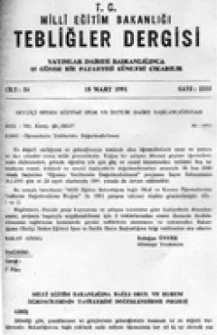
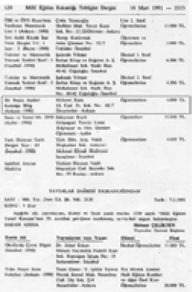

Reşit Rahmeti ARAT, “Kutadgu Bilig’de Tabibler ve Efsuncularla Münasebet Hakkında Parçalar”, Ülkü, cilt 8, sayı 46, Birinci Kânun 1936, s. 285-298.
______, Kutadgu Bilig I, Metin, İkinci Baskı, TDK., Ankara, 1979.
______, Kutadgu Bilig II, Çeviri, Üçüncü Baskı, TTK., Ankara, 1985.
Sadri Maksudî ARSEL, Kutadgu Bilig (İstanbul Üniversitesi Hukuk Fakültesi Mecmuası’nın 1947 yılı 2. Sayısından ayrı basım), İstanbul, 1947, s. 663.
______, Türk Tarihi ve Hukuk, İstanbul, 1947, s. 88-127.
Süleyman ATEŞ, Kur’an-ı Kerim ve Yüce Meali, Ankara, 1977.
W. BARTHOLD, “The Buğra Khan, Mentioned in the Qudatqu Bilik”, BSOS, 3, 1922, s. 151-158; Türkçesi, Râgıb Hulûsî, “Kutadku Bilig’in Zikrettiği Buğra Han Kimdir?”, TM., cilt 1, 1925, s. 221-226.
A. Himmet BERKÎ, 250 Hadis Terceme ve İzahı, Altıncı Baskı, DİBY., Ankara, 1983.
Naile BİNARK, “Kutadgu Bilig’de Evlenme, Aile ve Çocuk Terbiyesi”, TK., sayı 98, Aralık 1970, s. 174-178.
A. BOMBACI, “Kutadgu Bilig Hakkında Bazı Mülâhazalar”; Fuad Köprülü Armağanı, İstanbul, 1953, s. 65-75.
C. BROCKELMANN, “Yusuf Hâss Hâcib”, İA., Leiden tab‘ı, 4, 1933; Türkçesi, Kutadgu Bilig, Tıpkıbasım I, 135-136.
A. CAFEROĞLU, Türk Dili Tarihi I-II, Üçüncü Baskı, İstanbul, 1984.
Osman CİLACI, “Kutadgu Bilig’de Sosyal ve Dinî Motifler”, MK., sayı 58, Eylül 1987, s. 10-18.
Ali Osman COŞKUN, “Kutadgu Bilig’in Dili ve Şiir”, MK., sayı 41, 1983, s.14-16.
Saadet ÇAĞATAY, “Kutadgu Bilig’de Odgurmuş’ın Kişiliği”, TDAY-Belleten 1967, Ankara 1968, s. 39-49.
______, “Kutadgu Bilig’de Ögdülmiş”, TK., sayı 98, Aralık 1970, s. 95-111.
A. DİLAÇAR, 900. Yıldönümü Dolayısıyla Kutadgu Bilig İncelemesi, İkinci Baskı, Ankara, 1988.
______, “Kutadgu Bilig’in 900. Yıldönümü ve Balasagunlu Yusuf”, TDD., sayı 211, Ankara, 1969, s. 6-17.
Ahmet B. ERCİLASUN, Kutadgu Bilig Grameri -Fiil-, Ankara, 1984.
Halil ERSOYLU “Kutadgu Bilig’de Kur’an-ı Kerim Ayetlerinden İlhamlar”, TDA., sayı 15, Aralık 1981, s. 17-41.
Z. Fahri FINDIKOĞLU, XI. Asırda Bir Türk Mütefekkiri ve Ahlakî Düşünceleri, Ankara, 1938.
Abdurrauf FITRAT, “Kutadgu Bilig”, Maarif ve Okutguçı, 2, 1925, s. 68-74; Türkçesi, TM., cilt 1, İstanbul, 1925, s. 344-347; Almancası, Rachmati, “Kutadgu Bilig”, Ujb, 6, 1-2, 1926, s. 154-158.
Tuncer GÜLENSOY, “Kutadgu Bilig’den Hikmetler”, TK., sayı 98, Aralık 1970, s. 157-173.
______, “Kutadgu Bilig Üzerine Bir Bibliyografya Denemesi”, Bibliyografya, cilt 2, sayı 4, Temmuz 1973, s. 109-116.
M. HARTMANN, “Zur Metrischen Form des Kudatku Bilik”, Keleti Szemle, 3, 1902, s. 141-153; Türkçesi, Kutadgu Bilig, Tıpkıbasım I, s. 124-126.
İbrahim Necmi, “Kutadgu Bilig’in Vezni”, Yarın Mecmuası, sayı 5, İstanbul, 1921, s. 3.
Halil İNALCIK, “Kutadgu Bilig’de Türk ve İran Siyaset Nazariye ve Gelenekleri”, Reşit Rahmeti Arat İçin, Ankara, 1966, s. 259-271.
Abdulkadir İNAN, “Kutadgu Bilig Tıpkıbasımlarına Giriş”, Kutadgu Bilig, Tıpkıbasım I, TDK., İstanbul, 1942, s. 11-111.
______, “Yusuf Hâs Hâcib ve Eseri Kutadgu Bilig Üzerine Notlar”, TK., sayı 98, Aralık 1970, s. 112-126.
İbrahim KAFESOĞLU, Kutadgu Bilig ve Kültür Tarihimizdeki Yeri, KBY., İstanbul, 1980.
A. F. KARAMANLIOĞLU, “Kutadgu Bilig ve Kumandan”, TK., sayı 58, Ağustos 1967, s. 741-744.
______, “Kutadgu Bilig’in Diline ve Adına Dair”, TK., sayı 98, Aralık 1970, s. 127-131.
Salim KOCA, “Kutadgu Bilig’e Göre Türklerde Seçkin İnsan Anlayışı”, MK., sayı 6, 1977, s. 60-62.
Kutadgu Bilig, Tıpkıbasım I, Viyana Nüshası, TDK., İstanbul, 1942.
Kutadgu Bilig, Tıpkıbasım II, Fergana Nüshası, TDK., İstanbul, 1943.
Kutadgu Bilig, Tıpkıbasım III, Mısır Nüshası, TDK., İstanbul, 1943.
A.S. LEVEND, “Yazılışının 900. Yıldönümünde Kutadgu Bilig”, TDD., sayı 211, Ankara, 1969, s. 1-5.
P. M. MELİORANSKY, “O Kudatku Bilike Çingiz Hana, ZVO, 13, 1900, s. 15-23; Türkçesi, Kutadgu Bilig, Tıpkıbasım I, s. 121-123.
Muhammed Fuâd ABDU’L-BÂKÎ, El-Mu‘cemü’l-Müfehresü Li Elfâzı’l-Kur’âni’l-Kerim, İstanbul, 1982.
Jozsef THURY, Török nyelvemlekek a XIV szakad vegeig, Budapest, 1903, s. 12-13; Türkçesi, Râgıb Hulûsî, “On Dördüncü Asır Sonlarına Kadar Türk Dili Yadigârları”, Millî Tetebbûlar Mecmuası, cilt 2, sayı 4, 1331, s. 89-91.
Zeynü’d-dîn Ahmed b. Ahmed b. Abdi’l-Lâtifi’z-ZEBÎDÎ, Sahîh-i Buhârî Muhtasarı Tecrid-i Sarih Tercemesi ve Şerhi (Tercüme ve şerheden: Kâmil Mîras), cilt 1-13, Ankara, 1984.


Bir Başka Açıdan Kutadgu Bilig adlı eserimiz, Millî Eğitim Bakanlığı Tebliğler Dergisi’nin 18 Mart 1991 tarihli 2333. sayısında tavsiye edilmiştir.